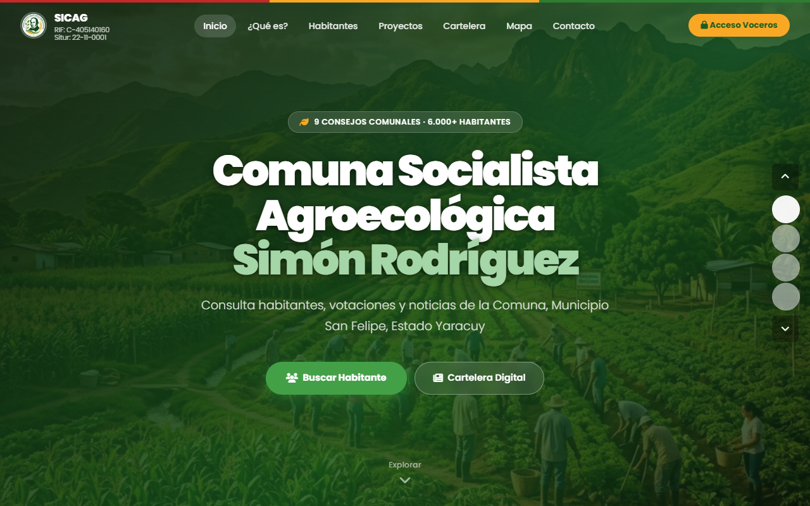
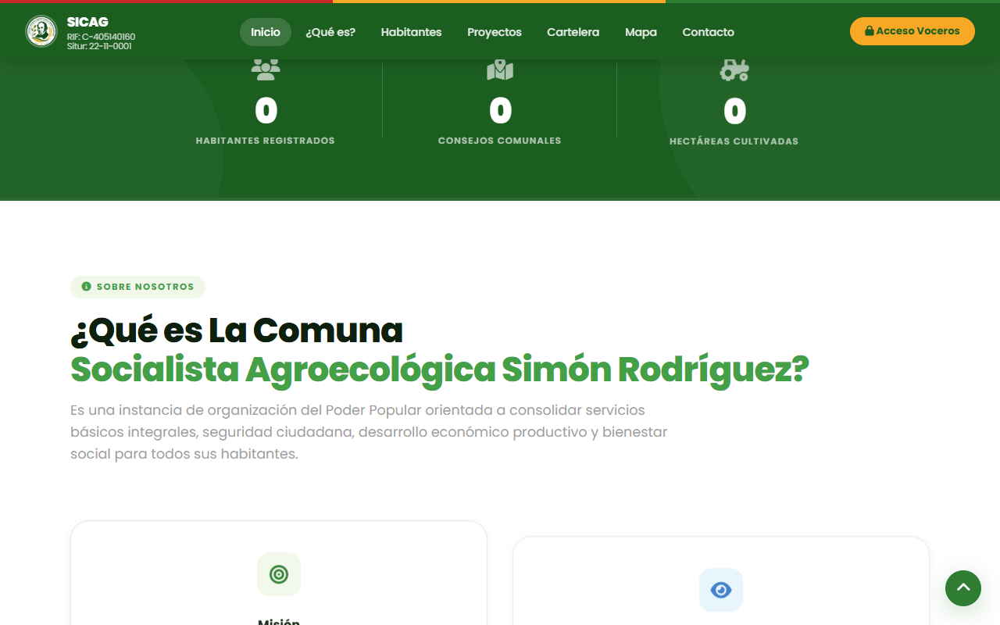
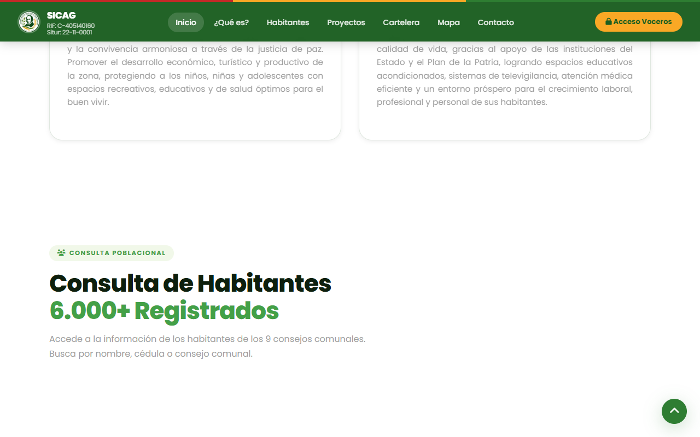
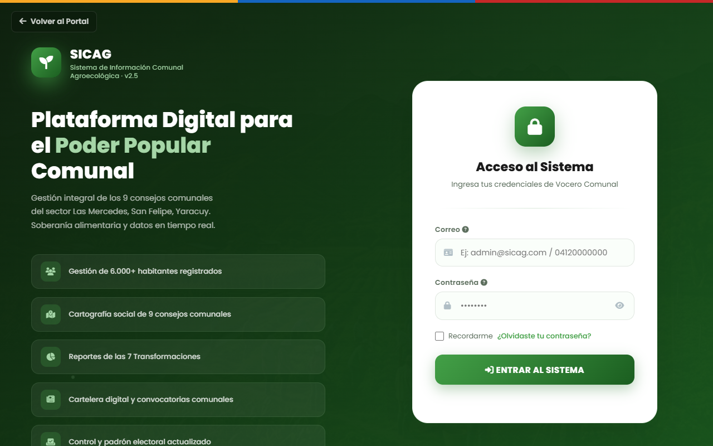

Comuna Socialista Agroecológica Simón Rodríguez
Cualquier habitante o visitante puede ingresar al portal sin necesidad de usuario ni contraseña para informarse.

Mostramos en tiempo real la cantidad de habitantes y familias beneficiadas.

Mantén informada a la comunidad mediante la cartelera digital y los proyectos socio-productivos.

Acceso protegido. Administrador: Control total. Vocero: Recolecta información en campo de forma online u offline.
Centro de mando con vista global de métricas y accesos rápidos a todos los censos.
El padrón poblacional. Listado completo de habitantes con opciones de filtrado avanzado y exportación.
Formulario multi-paso. El paso 1 recaba identidad, fecha de nacimiento y cálculos automáticos de edad.
Recolección de datos de salud (enfermedades, discapacidad) e información de ubicación exacta del habitante.
Control de la infraestructura del sector. Muestra los indicadores de riesgo y carencia de servicios.

Paso 1 del censo de vivienda. Se recaba tipo de vivienda, condición y dirección exacta en la comunidad.
Identificación detallada de los servicios: agua, luz, gas, internet y riesgos estructurales del hogar.
Seguimiento a las iniciativas de la comuna (planificación, ejecución) y su impacto social directo.
El núcleo de la Comuna Agroecológica. Registro y seguimiento de parcelas, siembras y cría de animales.
Seguridad total. Los voceros envían los datos (online u offline) a esta bandeja, donde el Administrador debe revisarlos y aprobarlos antes de guardarse.
Visualización geoespacial interactiva de las viviendas, sectores y zonas productivas de la Comuna.
SICAG centraliza datos, empodera a los voceros en campo gracias al modo offline, garantiza la seguridad mediante validaciones y expone los logros de la comunidad al mundo a través del portal público.